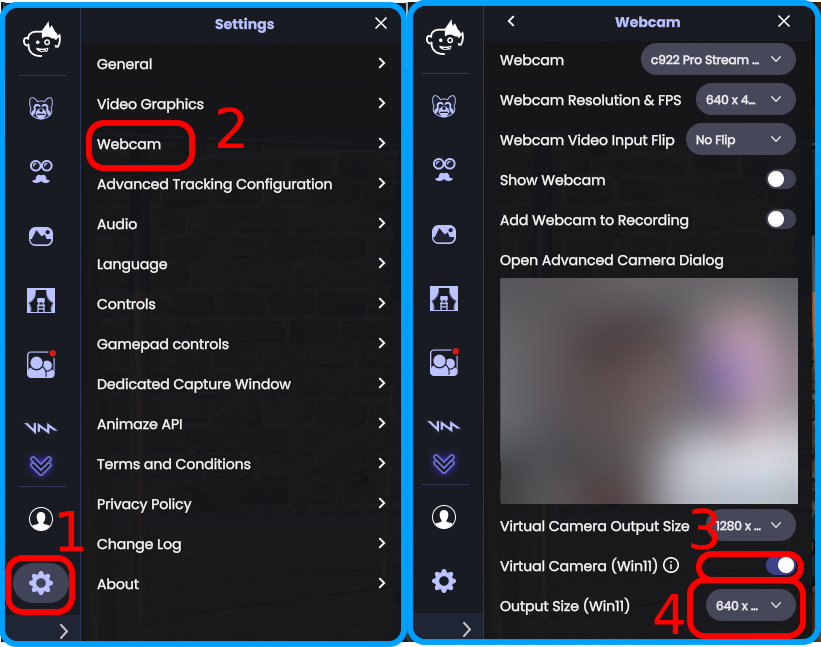
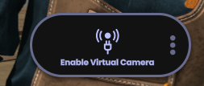

Animaze Desktop: How can I install the Animaze Virtual Camera driver?
Starting with Animaze version 1.27.12755 (Summer 2026) Animaze has two Virtual Camera solutions available for you. The Legacy one is the old one, that continues to be supported for older versions of Windows (it is better suited for Windows 10), and a newer modern one built specifically for Windows 11, using the Windows Media Foundation Virtual Webcam Layer. Please note that this is a Windows functionality available only on Windows 11.
- Modern Windows 11 Animaze Virtual Camera (reccomended for Windows 11 users)
- Legacy Animaze Virtual Camera (Windows 10 or older versions of Windows 11)
Modern Windows 11 Animaze Virtual Camera. (for now, only on the NextVersion Branch of Animaze)
Animaze now has a new virtual webcam device, that utilizes the latest native Windows 11 infrastructure for virtual webcams. This aims to provide improved compatibility with the latest Windows 11 updates, as the previous legacy virtual webcam driver can be problematic on the latest Windows 11 versions. This guide explains how to enable and use this new virtual cam, built specifically for Windows 11. Unlike the old one, using the new device does not require running a driver installer. It is all handled via the Animaze app UI.
- A. Open the Animaze app. Make sure you are on version 1.27.12755 or newer.
- B. Open the Settings menu (1) navigate to the Webcam section(2)

- C. Locate the “Virtual Camera (Win11)” toggle (3) and switch it to "ON". When prompted by the system to allow for the new device registration, say yes.
- D. Then set its intended output resolution. It is a separate drop-down from the old one, called “Output Size (Win11)” (4), and it is placed below the new Virtual Camera Toggle. Depending on how large your Animaze viewport is, you might have to scroll down to see it. Also depending on what the target app (that you broadcast to) requires, some letterboxing might be visible, if the aspect ratio does not match.
- E. Then, start the broadcast video feed normally from Animaze, from the central “Enable Virtual Camera” control.

Step2: Selecting and using the camera output in your apps.
- Open your preferred video conferencing or streaming application (e.g., Zoom, OBS, Teams).
- Go to the application’s video settings.
- Select "Animaze Vcam Win11 (Windows Virtual Camera)" from the list of available video sources. If it is not there, you might need to tell the target app to refresh the list of currently available webcams (some apps do this by default; others need to be restarted)
Important Notes & Troubleshooting
- High performance streaming: For streaming to OBS or similar broadcasting software, in a high resolution and at a high FPS, the best way to send your avatar video feed to the broadcasting software is not any virtual webcam, but using Spout2 or Dedicated Window Capture. The virtual webcam driver is meant as an easy-to-use bridge to web conferencing applications that cannot receive a Spout2 feed, like Zoom, Omegle, Teams, Meets. The virtual webcam driver is easy to use, and while it does work with OBS, it is not a high-performance video bridge to Broadcasting software.
- Single Access: By default, most webcams in Windows, including the Windows 11 Animaze Virtual Camera, can only be sourced by one application at a time. On recent versions of Windows 11, you can change that in the Windows webcam settings for each webcam device. If the Animaze Vcam Win11 (Windows Virtual Camera) camera does not appear in your app, or the feed is a black screen ensure no other software (including web browsers) is currently using the camera feed, or that you have used the Windows settings to allow multi-app access for it.
- Security Software: If your camera is not working, check that your third-party antivirus or security software is not blocking the camera signal.
- Compatibility: This new architecture is specifically optimized for Windows 11. Ensure your system is up to date for the best performance. If you are on Windows 10, please continue using the old virtual webcam driver or the other broadcasting methods like Dedicated Window Capture or Spout2.
- Performance and CPU/GPU load: Since this functionality is a relatively new technology, not all applications might be optimized for it. If you experience any webcam apps having trouble with it, or causing extra CPU/GPU load, please contact support and use direct Window Capture, Spout2 or the old virtual webcam driver.
- If you want to unregister the new webcam from your system, you should do this from the Animaze app, following the same steps that you did when activating it, except toggling the switch to “off”. After turning off the new camera, you might need to restart other webcam apps that were accessing it, so that they stop trying to look for it.
Legacy Animaze Virtual Camera
The Animaze Virtual Camera should be automatically installed when setting up the application through Steam. In case you have either canceled the step that installs it or haven’t granted Steam admin privileges for the setup processes, you can manually install the old virtual camera following these steps.
Firstly, you need to have the Animaze app installed on your computer or laptop

In your Steam app, hit the right click on the Animaze app -> Properties -> Local Files - > Browse Local Files

Enter the BIN FOLDER

From the bin folder open the prerequisites folder and then go into the AnimazeVirtualCamera folder

Double click on the “install” Windows Batch File to run and install the Virtual Camera driver

If you encounter issues with the Animaze virtual camera or if you see the FaceRig Virtual camera you can try following the steps/criteria:
- Make sure that your operating system is up to date and upgraded, as our new Animaze virtual camera requires Windows 10 and at least version 1903.
- Make sure that your webcam drivers are up to date and restart your system.
As an alternative, you can also switch the USB ports of your webcam (for non built-in webcams) with a different one on your computer
To be sure that you are able to stream, we have included the old FaceRig virtual camera as a backup.